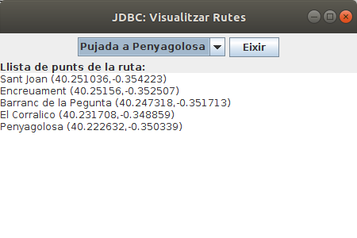
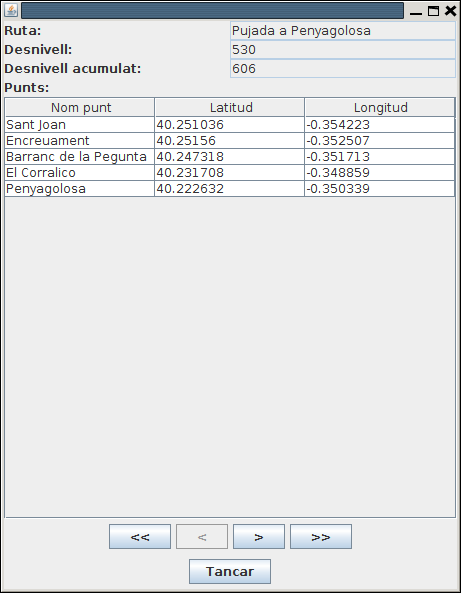
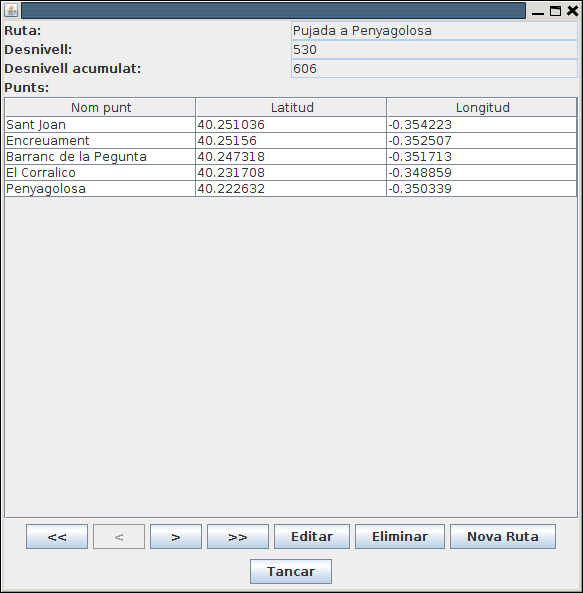
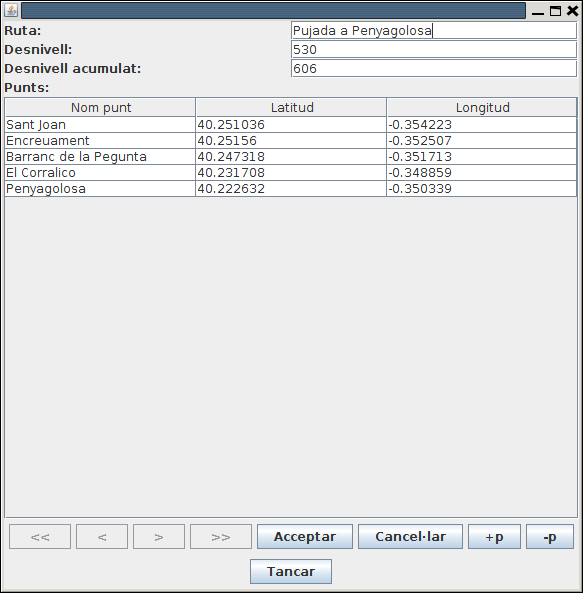
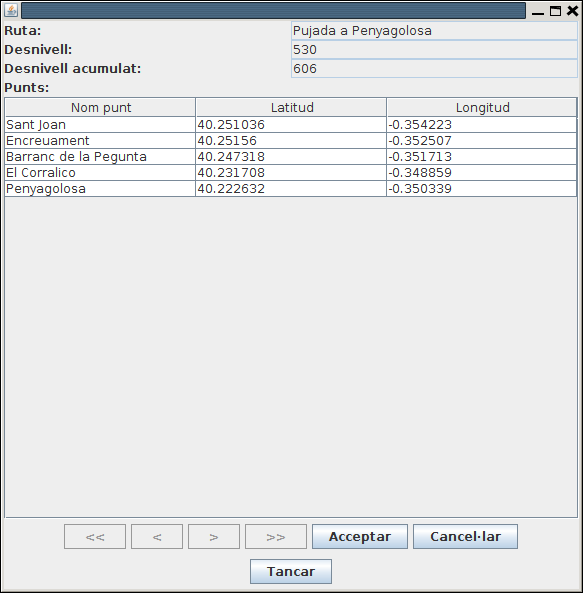

Exercicis
Els següents exercicis, posa'ls tots en un paquet del projecte Tema4 anomenat exercicis
Exercici 4_1
Crea un programa Kotlin anomenat Ex4_1_CreaTaulesRuta.kt que cree les taules necessàries per a guardar les dades de les rutes en una Base de Dades SQLite anomenada Rutes.sqlite.
Han de ser 2 taules:
- RUTES: que contindrà tota la informació del conjunt de la ruta. La clau principal s'anomenarà num_r (entera). També guardarà el nom de la ruta (nom_r), desnivell (desn) i desnivell acumulat (desn_ac). Els tipus d'aquestos tres camps últims seran de text, enter i enter respectivament.
- PUNTS: que contindrà la informació dels punts individuals de les rutes. Contindrà els camps num_r (número de ruta: enter) , num_p (número de punt: enter), nom_p (nom del punt: text) , latitud (número real) i longitud (número real). La clau principal serà la combinació num_r + num_p . Tindrà una clau externa (num_r) que apuntarà a la clau principal de RUTES.
Adjunta tot el projecte, i també la Base de Dades Rutes.sqlite (normalment estarà dins del projecte)
Exercici 4_2
Crea una altre programa anomenat Ex4_2_PassarRutesObjSQLite.kt que passe les dades del fitxer Rutes.obj a les taules de Rutes.sqlite.
Per a major comoditat copiat el fitxer Rutes.obj que vam fer al projecte Tema3 dins d'aquest projecte, a més de les classes Coordenades.kt, PuntGeo.kt i Ruta.kt dins del paquet. Si el paquet s'anomena igual en els dos projectes (jo us havia suggerit exercicis) no hauria d'haver cap problema.
Concretament en el trasvassament d'informació:
- Per a cada ruta s'ha de considerar el número de ruta, que s'anirà incrementant, i a més serà la clau principal. La primera ruta ha de ser la número 1. A banda han d'anar la resta de camps.
- Per a cada punt s'ha de guardar el número de ruta i el número de punt (s'anirà incrementant des de 1 per a cada ruta). A banda han d'anar la resta de camps.
- T'aconselle vivament que abans d'executar les sentències SQL d'inserció, les tragues per pantalla, per veure si la sintaxi és correcta. Quan totes siguen correctes, pots substituir l'eixida per l'execució de les sentències.
Adjunta tot el projecte, i també la Base de Dades Rutes.sqlite, que normalment estarà situada dins del projecte
Exercici 4_3
Crea un programa anomenat Ex4_3_VisRutes_SQLite.kt, que mostre les rutes amb un aspecte similar a l'Exercici 3_4, però accedint ara a les dades guardades en Rutes.sqlite:
|  |
Podríem mantenir la connexió fins que s'aprete el botó d'Eixir, que és quan la tancaríem.
Ací teniu l'esquelet del programa.
import javax.swing.JFrame
import java.awt.EventQueue
import java.awt.BorderLayout
import javax.swing.JPanel
import java.awt.FlowLayout
import javax.swing.JComboBox
import javax.swing.JButton
import javax.swing.JTextArea
import javax.swing.JLabel
class Finestra : JFrame() {
init {
// Sentències per a fer la connexió
defaultCloseOperation = JFrame.EXIT_ON_CLOSE
setTitle("JDBC: Visualitzar Rutes")
setSize(450, 450)
setLayout(BorderLayout())
val panell1 = JPanel(FlowLayout())
val panell2 = JPanel(BorderLayout())
add(panell1, BorderLayout.NORTH)
add(panell2, BorderLayout.CENTER)
val llistaRutes = arrayListOf<String>()
// Sentències per a omplir l'ArrayList amb el nom de les rutes
val combo = JComboBox<String>(llistaRutes.toTypedArray())
panell1.add(combo)
val eixir = JButton("Eixir")
panell1.add(eixir)
val area = JTextArea()
panell2.add(JLabel("Llista de punts de la ruta:"),BorderLayout.NORTH)
panell2.add(area,BorderLayout.CENTER)
combo.addActionListener() {
// Sentèncis quan s'ha seleccionat un element del JComboBox
// Han de consistir en omplir el JTextArea
}
eixir.addActionListener(){
// Sentències per a tancar la connexió i eixir
}
}
}
fun main(args: Array<String>) {
EventQueue.invokeLater {
Finestra().isVisible = true
}
}Exercici 4_4
En aquest exercici anem a practicar la creació d'una classe que encapsule pràcticament tot el tractament de la Base de Dades, per a fer transparent el desfasament Objecte-Relacional. Per tant aquesta classe ha de ser capaç de llegir de les taules convertint a objectes, i també guardar la informació dels objectes en les taules. S'anomenarà GestionarRutesBD.
En un paquet nou del mateix projecte, anomenat util.bd haureu de fer la classe GestionarRutesBD, que és la que encapsularà tot. Internament només tindrà una propietat, la de connexió. Tindrà els següents mètodes:
- El constructor de GestionarRutesBD: establirà la connexió amb la Base de Dades Rutes.sqlite (per comoditat en el directori del projecte). Si no existeixen les taules RUTES i PUNTS les haurà de crear (podeu utilitzar la sentència CREATE TABLE IF NOT EXISTS ...)
- fun close(): tancarà la connexió.
- fun inserir(r: Ruta): Inserirà en la BD les dades corresponents a la ruta passada per paràmetre (inicialment s'aconsella únicament "imprimir" les sentències, per veure si són correctes). El num_r ha de ser el posterior a l'última existent, per exemple amb la consulta SELECT MAX(num_r) FROM RUTES
- fun buscar(i: Int): Ruta: torna la ruta amb el número passat com a paràmetre.
- fun llistat(): ArrayList<Ruta>: torna un ArrayList de Ruta amb totes les rutes de la Base de Dades.
- fun esborrar(i: Int): esborra la ruta amb el número passat com a paràmetre (recordeu que els punts de la ruta també s'han d'esborrar)
Per a provar-lo podeu incorporar l'executable UtilitzarRutesBD.kt. Hauríeu de comentar les línies que no s'utilitzen en cada moment. Per exemple, si ja heu aconseguit inserir la ruta, i continueu provant el programa per als mètodes buscar() i llistat(), comenteu la línia gRutes.inserir(r) per a no inserir-la més vegades.
fun main(args: Array<String>) {
// Creació del gestionador
val gRutes = GestionarRutesBD()
// Inserció d'una nova Ruta
val noms = arrayOf( "Les Useres", "Les Torrocelles", "Lloma Bernat", "Xodos (Molí)", "El Marinet", "Sant Joan")
val latituds = arrayOf(40.158126, 40.196046, 40.219210, 40.248003, 40.250977, 40.251221)
val longituds = arrayOf(-0.166962, -0.227611, -0.263560, -0.296690, -0.316947, -0.354052)
val punts = arrayListOf<PuntGeo>()
for (i in 0 until 6){
punts.add(PuntGeo(noms[i], Coordenades(latituds[i], longituds[i])))
}
gRutes.inserir(Ruta("Pelegrins de Les Useres",896,1738,punts))
// Llistat de totes les rutes
for (r in gRutes.llistat())
r?.mostrarRuta()
// Buscar una ruta determinada
val r2 = gRutes.buscar(2)
if (r2 != null)
r2.mostrarRuta()
gRutes.close()
}Exercici 4_5 (voluntari)
Crea el segünet mètode en la classe GestionarRutesBD:
fun guardar(r: Ruta)
El que ha de fer aquest mètode és:
- Si no existeix la ruta, la inserirem
- Si ja existeix la ruta, la modificarem. Heu de parar especial atenció als punts. Potser el més còmode siga esborrar els punts de la ruta i tornar a crear-los
Considerarem que la ruta existeix si hi ha una amb el mateix nom.
Per a provar-lo, podeu utilitzar aquest programa principal guardant el codi en un fitxer Kotlin anomenat UtilitzarRutesBD2.kt :
fun main(args: Array<String>) {
// Creació del gestionador
val gRutes = GestionarRutesBD()
var r = gRutes.buscar(1) as Ruta
r.mostrarRuta()
r.desnivellAcumulat=606
gRutes.guardar(r)
r = gRutes.buscar(2) as Ruta
r.mostrarRuta()
r.llistaDePunts.add(0, PuntGeo ("Plaça M.Agustina", Coordenades(39.988507, -0.034533)))
gRutes.guardar(r)
println("Després de modificar")
r = gRutes.buscar(1) as Ruta
r.mostrarRuta()
r = gRutes.buscar(2) as Ruta
r.mostrarRuta()
gRutes.close()
}Exercici 4_6 (voluntari)
Anem a fer molt més completa i atractiva l'aplicació gràfica de les rutes. Ens aprofitarem del construït en els exercicis 4.4 i 4.5, és a dir, la classe GestionarRutesBD, que encapsulava pràcticament l'accés a la BD, de manera que nosaltres obtenim (i guardem) objectes.
El programa mostrarà una ruta, i hi haurà també uns botons per anar a la primera, anterior, següent i última ruta. Hi ha també el botó de Tancar, que tancarà l'objecte GestionarRutesBD i eixirà del programa.
Per a omplir el JTable amb els punts, teniu un mètode que ho fa automàticament: plenarTaula(). Observeu quin és el seu paràmetre.
Aquest seria el seu aspecte:

Aquest seria l'esquelet del programa.
Copieu-lo en un fitxer Kotlin anomenat Ex4_6_VisRutes_SQLite_Complet.kt en el mateix paquet util.bd, i poseu les sentències necessàries després dels comentaris:
import java.awt.EventQueue
import java.awt.GridLayout
import java.awt.FlowLayout
import javax.swing.JFrame
import javax.swing.JPanel
import javax.swing.BoxLayout
import javax.swing.JButton
import javax.swing.JLabel
import javax.swing.JTextField
import javax.swing.JTable
import javax.swing.JScrollPane
class FinestraComplet : JFrame() {
val gRutes = GestionarRutesBD()
var llista = arrayListOf<Ruta>()
var numActual = 0
val qNom = JTextField(15)
val qDesn = JTextField(5)
val qDesnAcum = JTextField(5)
val punts = JTable(1,3)
val primer = JButton(" << ")
val anterior = JButton(" < ")
val seguent = JButton(" > ")
val ultim = JButton(" >> ")
val tancar = JButton("Tancar")
init {
defaultCloseOperation = JFrame.EXIT_ON_CLOSE
setTitle("JDBC: Visualitzar Rutes Complet")
setLayout(GridLayout(0,1))
val p_prin = JPanel()
p_prin.setLayout(BoxLayout(p_prin, BoxLayout.Y_AXIS))
val panell1 = JPanel(GridLayout(0,2))
panell1.add(JLabel("Ruta:"))
qNom.setEditable(false)
panell1.add(qNom)
panell1.add(JLabel("Desnivell:"))
qDesn.setEditable(false)
panell1.add(qDesn)
panell1.add(JLabel("Desnivell acumulat:"))
qDesnAcum.setEditable(false)
panell1.add(qDesnAcum)
panell1.add(JLabel("Punts:"))
val panell2 = JPanel(GridLayout(0,1))
punts.setEnabled(false)
val scroll = JScrollPane(punts)
panell2.add(scroll, null)
val panell5 = JPanel(FlowLayout())
panell5.add(primer)
panell5.add(anterior)
panell5.add(seguent)
panell5.add(ultim)
val panell6 = JPanel(FlowLayout())
panell6.add(tancar)
add(p_prin)
p_prin.add(panell1)
p_prin.add(panell2)
p_prin.add(panell5)
p_prin.add(panell6)
pack()
primer.addActionListener{
// instruccions per a situar-se en la primera ruta, i visualitzar-la
}
anterior.addActionListener{
// instruccions per a situar-se en la ruta anterior, i visualitzar-la
}
seguent.addActionListener{
// instruccions per a situar-se en la ruta següent, i visualitzar-la
}
ultim.addActionListener{
// instruccions per a situar-se en l'última ruta, i visualitzar-la
}
tancar.addActionListener{
}
inicialitzar()
VisRuta()
}
fun plenarTaula(ll_punts: MutableList<PuntGeo>){
var ll = Array(ll_punts.size) { arrayOfNulls<String>(3) }
for (i in 0 until ll_punts.size){
ll[i][0]=ll_punts.get(i).nom
ll[i][1]=ll_punts.get(i).coord.latitud.toString()
ll[i][2]=ll_punts.get(i).coord.longitud.toString()
}
val caps = arrayOf("Nom punt","Latitud","Longitud")
punts.setModel(javax.swing.table.DefaultTableModel(ll,caps))
}
fun inicialitzar() {
// instruccions per a inicialitzar llista i numActual
}
fun VisRuta(){
// instruccions per a visualitzar la ruta actual (l'índex el tenim en numActual)
ActivarBotons()
}
fun ActivarBotons(){
// instruccions per a activar o desactivar els botons de moviment ( isEnabled )
}
}
fun main(args: Array<String>) {
EventQueue.invokeLater {
FinestraComplet().isVisible = true
}
}Exercici 4_7 (ampliació - voluntari)
Modifica l'aplicació anterior per a que es puguen modificar, esborrar i inserir les rutes.

- S'haurien de posar més botons: Editar, Eliminar i Nova Ruta.
- Estaria bé que en entrar a qualsevol de les opcions anteriors es desactivaren els botons de navegació, que desaparegueren els d'Editar, Eliminar i Nova Ruta, i que aparegueren els d'Acceptar i Cancel·lar.
- En tots els casos, si es cancel·la no es fa cap acció, però s'ha de tornar a l'estat anterior (primera imatge)
- EDITAR:
- S'han d'"activar" els controls per a poder modificar les dades.
- En cas d'acceptar s'ha de fer la modificació a partir del contingut de tots els controls (no cal detectar quins s'han modificat)
- En cas de cancel·lar, no es fa la modificació, i senzillament s'ha de tornar a visualitzar la ruta actual (com no s'ha fet cap canvi, apareixeran les dades anteriors)
- Per a afegir nous punts, es podria posar un botó per a afegir una nova línia al JTable, i un altre per a llevar una línia

- ELIMINAR:
- Si s'accepta, s'haurà d'esborrar la ruta, sinó tornar a visualitzar-la

- INSERIR:
- Haurà de mostrar tots els camps en blanc, i evidentment activats, per a poder introduir dades.
- En cas d'acceptar s'ha d'introduir la nova ruta.
- En cas de cancel·lar, estaria bé tornar a la que s'estava mostrant abans d'apretar el botó de nova ruta.
- Per a introduir nous punts, es podria posar un botó per a afegir una nova línia al JTable, i un altre per a llevar una línia

Nota
EL JTable de vegades és engorrós. Si s'està editant una casella, la informació no s'ha introduït encara, fins que no s'aprete enter, tab o amb el ratolí no s'aprete a algun altre lloc. Per a acabar la introducció de la informació que s'està editant, es podria executar el següent (per exemple quan s'ha apretat Acceptar):
if (punts.isEditing())
punts.getCellEditor().stopCellEditing()
on punts seria el JTable.
Aquest seria l'esquelet del programa, que el podríeu guardar en el fitxer Ex4_7_VisRutes_SQLite_Avançat.kt en el mateix paquet util.bd,on hem posat 2 mètodes que poden anar bé per a activar i visualitzar uns botons o altres. I també activar els JTextField i el JTable.
package util.bd
import java.awt.EventQueue
import java.awt.GridLayout
import java.awt.FlowLayout
import javax.swing.JFrame
import javax.swing.JPanel
import javax.swing.BoxLayout
import javax.swing.JButton
import javax.swing.JLabel
import javax.swing.JTextField
import javax.swing.JTable
import javax.swing.JScrollPane
import javax.swing.table.DefaultTableModel
class FinestraAvancat : JFrame() {
val gRutes = GestionarRutesBD()
var llista = arrayListOf<Ruta>()
var numActual = 0
var actualitzant = false
var modificacio = ""
val qNom = JTextField(15)
val qDesn = JTextField(5)
val qDesnAcum = JTextField(5)
val punts = JTable(1, 3)
val primer = JButton(" << ")
val anterior = JButton(" < ")
val seguent = JButton(" > ")
val ultim = JButton(" >> ")
val tancar = JButton("Tancar")
val editar = JButton("Editar")
val eliminar = JButton("Eliminar")
val nova = JButton("Nova Ruta")
val acceptar = JButton("Acceptar")
val cancelar = JButton("Cancel·lar")
val mesP = JButton("+p")
val menysP = JButton("-p")
init {
defaultCloseOperation = JFrame.EXIT_ON_CLOSE
setTitle("JDBC: Visualitzar Rutes Avançat")
setLayout(GridLayout(0, 1))
val p_prin = JPanel()
p_prin.setLayout(BoxLayout(p_prin, BoxLayout.Y_AXIS))
val panell1 = JPanel(GridLayout(0, 2))
panell1.add(JLabel("Ruta:"))
qNom.setEditable(false)
panell1.add(qNom)
panell1.add(JLabel("Desnivell:"))
qDesn.setEditable(false)
panell1.add(qDesn)
panell1.add(JLabel("Desnivell acumulat:"))
qDesnAcum.setEditable(false)
panell1.add(qDesnAcum)
panell1.add(JLabel("Punts:"))
val panell2 = JPanel(GridLayout(0, 1))
punts.setEnabled(false)
val scroll = JScrollPane(punts)
panell2.add(scroll, null)
val panell5 = JPanel(FlowLayout())
panell5.add(primer)
panell5.add(anterior)
panell5.add(seguent)
panell5.add(ultim)
panell5.add(editar)
panell5.add(eliminar)
panell5.add(nova)
acceptar.setVisible(false)
panell5.add(acceptar)
cancelar.setVisible(false)
panell5.add(cancelar)
mesP.setVisible(false)
panell5.add(mesP)
menysP.setVisible(false)
panell5.add(menysP)
val panell6 = JPanel(FlowLayout())
panell6.add(tancar)
add(p_prin)
p_prin.add(panell1)
p_prin.add(panell2)
p_prin.add(panell5)
p_prin.add(panell6)
ActivarAltres(true)
pack()
ActivarAltres(false)
primer.addActionListener{
// instruccions per a situar-se en la primera ruta, i visualitzar-la
}
anterior.addActionListener{
// instruccions per a situar-se en la ruta anterior, i visualitzar-la
}
seguent.addActionListener{
// instruccions per a situar-se en la ruta següent, i visualitzar-la
}
ultim.addActionListener{
// instruccions per a situar-se en l'últim ruta, i visualitzar-la
}
tancar.addActionListener{
}
editar.addActionListener {
// instruccions per a editar la ruta que s'està veient en aquest moment
// s'han d'activar els quadres de text, i el JTable
}
eliminar.addActionListener {
// instruccions per a eliminar la ruta que s'està veient en aquest moment
}
nova.addActionListener {
// instruccions per a posar en blanc els quadres de text i el JTable, per a inserir una nova ruta
// s'han d'activar els quadres de text, i el JTable
}
acceptar.addActionListener {
// instruccions per a acceptar l'acció que s'està fent (nova ruta, edició o eliminació)
}
cancelar.addActionListener {
// instruccions per a cancel·lar l'acció que s'estava fent
}
mesP.addActionListener {
// instruccions per a afegir una línia en el JTable
// S'ha de fer sobre el DefaultTableModel
}
menysP.addActionListener {
// instruccions per a llevar una línia del JTable
// S'ha de fer sobre el DefaultTableModel
}
inicialitzar()
VisRuta()
}
fun plenarTaula(ll_punts: MutableList<PuntGeo>) {
var ll = Array(ll_punts.size) { arrayOfNulls<String>(3) }
for (i in 0 until ll_punts.size) {
ll[i][0] = ll_punts.get(i).nom
ll[i][1] = ll_punts.get(i).coord.latitud.toString()
ll[i][2] = ll_punts.get(i).coord.longitud.toString()
}
val caps = arrayOf("Nom punt", "Latitud", "Longitud")
punts.setModel(javax.swing.table.DefaultTableModel(ll, caps))
}
fun inicialitzar() {
// instruccions per a iniialitzar llista i numActual
}
fun VisRuta(){
// instruccions per a visualitzar la ruta actual (l'índex el tenim en numActual)
ActivarBotons()
}
fun ActivarBotons(){
// instruccions per a activar o desactivar els botons de moviment ( setEnabled(Boolean) )
}
fun ActivarAltres(b: Boolean) {
// instruccions per a mostrar els botons acceptar, cancelar, mesP, menysP,
// ocultar editar, eliminar, nova. O al revés
// I descativar els de moviment
}
fun ActivarQuadres(b: Boolean) {
// instruccions per a fer editables els JTextFiels i el JTable
}
fun PosarQuadresBlanc() {
// instruccions per a deixar els controls en blanc per a inserir una nova ruta
}
fun IniRuta(): Ruta {
// instruccions per a tornar una Ruta a partir de les dades dels controls
}
}
fun main(args: Array<String>) {
EventQueue.invokeLater {
FinestraAvancat().isVisible = true
}
}Llicenciat sota la Llicència Creative Commons Reconeixement CompartirIgual 2.5